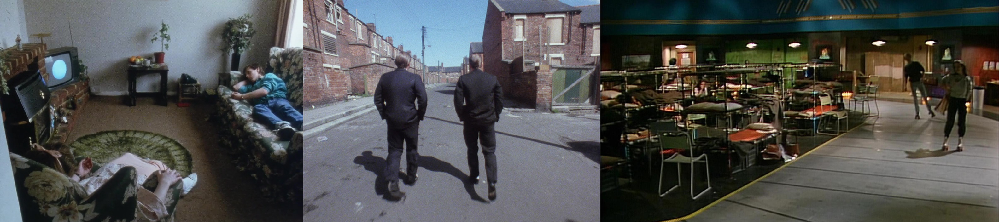

The June 7th Public Works event featured 2 talks:
A chemistry talk:
"Behind the Taste: The Chemistry of Whiskey"
by Dr. Daisy Rosas Vargas
Associate Professor of Chemistry at Ithaca College
We pick up a cold glass to drink, beads of water running down the side. The brown intoxicating liquid tastes bitter and smells earthy, with a touch of sweetness. These descriptions sound like it MUST belong to precious morning iced coffee. Not quite. This is whiskey. We can use the same visual, olfactory, and touch senses used to enjoy coffee to learn about chemistry that makes whiskey. This talk will focus on American-made whiskey and cocktails with a smokey touch of international facts.
and a humanities talk:
"Replica, Repair, Forgery: Archaeological Sites as Art Forms"
by Dr. Alison Ritterhaus
Lynch Family Postdoctoral Associate in Curricular Engagement at the Johnson Museum
“Step into the past!” Public communications related to archaeological sites often promise an immersive experience that allows visitors to enter a specific historic moment in a particular place, a kind of time travel. But how realistic is this premise? In this talk, I will begin with a case study of a Roman villa buried by the 79 CE eruption of Mount Vesuvius on the Bay of Naples, discussing its history of excavation, reconstruction, presentation to the public, and diffusion through contemporary media around the question of where, and whether, the “real” villa exists. The relevance of this question hinges on public perception: how do archaeologists communicate their findings and knowledge, as well as the gaps, with those who visit? I will close with a brief comparison to an American “archaeological” park and the ways that public-facing historical sites affect the way that people relate emotionally to the past.
The May 3rd Public Works event featured 2 talks:
A film talk:
"Movie Magic/Sounding Dissent"
by Molly Ryan
Director of Cornell Cinema
In this two-part presentation, Molly Ryan, the new director of Cornell Cinema, will outline her programming vision for Cornell Cinema and argue why it still matters to see films in movie theater. She will then discuss her research on sound and violence in the work of British television director Alan Clarke (and why it might not make sense to show these films at Cornell Cinema despite how much she loves them). Her presentation will explore Clarke’s engagement with sound, domestic space, and the media landscape of Thatcherite Britain in three films produced for the BBC (ROAD, CHRISTINE, and STARS OF THE ROLLER STATE DISCO), focusing on how Clarke effectively weaponized the genre of the television play in the 1980s, using it to nationalize his political dissent, undermine Margaret Thatcher’s political rhetoric, and problematize British nationalism.

and a science talk:
"What the Hell is a Higgs's Boson? An Insider's Look at the Physics of the Large Hadron Collider at CERN"
by Karl Smolenski
US-Compact Muon Solenoid High-Luminosity LHC Systems Engineer, Cornell Univeristy
Peter Higgs in 1963-64 proposed a mechanism and related particle that could explain how some other elementary particles acquired mass. This theory led to a multi decade search for the eponymous Higgs boson and the construction of incredibly complex accelerators and detectors to generate and observe these proposed particles. Finally in a data set from the period 2011-2013 the particle was observed experimentally, and this filled in the last bit of the standard model of particle physics. Higgs and colleagues were awarded the 2013 Nobel prize in physics.
I’ll try to give some background on the accelerator and detectors at CERN that were used in this groundbreaking work. Our current work is leading to a second-generation detector capable of detecting immense quantities of Higgs with great precision to fully understand its properties. As an engineer I’ll give some practical examples of the problems that need to be solved to enable this science.
The April 5th Public Works event featured 2 talks:
A science talk:
"Spacecraft Small and Mighty: Exploring Space and Studying Cows with Chip-Scale Spacecraft"
by Dr. Hunter Adams
Lecturer in the Cornell Electrical Engineering Dept.
This talk introduces an entirely new kind of spacecraft that draws from concepts in ecology. This spacecraft (the Monarch) weighs as much as a penny and is the first to trade quantity, rather than cost, for low mission risk. By taking advantage of recent technological advancements in unrelated disciplines and taking a statistical approach to mission assurance, Monarchs open the door to an entirely new paradigm in space access and exploration. This talk describes the challenges and advantages unique to tiny spacecraft. It also presents a number of use cases, involving distributed sensing and planetary science, that are unique to spacecraft of the Monarch’s diminutive size and large quantity. Results from simulated lunar impact survival tests and a case-study planetary science mission (conducted with cows) are presented and discussed, suggesting one particular use case, along with the results from launch tests conducted in collaboration with SpinLaunch.
and a music talk:
"Edison to Atmos: The Evolution of Audio Systems and the Musical Listening Experience"
by Michael Caporizzo
Associate Professor of Music Performance at Ithaca College
For over a century, audio technology has been an integral component to experiencing and sharing music. Recording has evolved from a novelty which captured a vague facsimile of a performance to a technically superior mode of expression which in most cases supplants live performance. Throughout this evolution, there have been several instances where a technological advancement changed the recording and consumption processes permanently; mass duplication, electrical recording, magnetic tape, stereo capture and disc-cutting, multitrack recording, and digital recording are just a few of the most consequential advancements. In 2023, we are currently experiencing another transformative advancement – immersive audio. A once esoteric format has quickly become accessible to consumers through streaming platforms, and the recording industry is racing to catch up. This presentation will highlight a few of these key transformative events as well as some of the music indicative of these advancements. Emphasis will be placed on immersive audio technology, and musical examples will be played back over a (modest) immersive sound system. Perhaps history offers some clues to understand where we might be heading next.
The March 1st Public Works event featured 2 talks:
A history talk:
"Plenty Penmanship: The Politics of Paper in late Nineteenth-century Bogotá"
by Daniela Samur
PhD Candidate in the Cornell History Dept.
In late nineteenth century Bogotá, the Biblioteca Nacional –Colombia’s legal deposit library– was labeling some of its prints as “useless” and selling them as scrap. The money from the sales, directors of the Biblioteca explained, would be put to better use in paying for bindings. Other books, deemed more important and worth saving, needed to be properly bound so that they could resist peoples’ fingers, time, and mice. The tension between preservation and destruction at the Biblioteca Nacional in Bogotá during the late nineteenth century was not an issue about hierarchies of knowledge, but one about the daily and mundane logistics of ordering. This is a story about how workers at Colombia’s central library dreamed of an organized and exhaustive collection of prints but couldn’t even manage to walk through the hallways without stumbling over piles of books. Gathering, inventorying, cataloguing, and putting books on shelves, I show in this presentation, was a material practice, and one shaped by the scarcity of paper and of people’s penmanship.
and a physics talk:
"Primordial planets: When did they form and what were they like?"
by Dr. Luke Keller
Professor of Physics and Astronomy at Ithaca College
Student: When did planets first form?
Prof. Luke: Well, within a few million years of the sun's formation the planets formed in a disk of gas and dust called a protoplanetary disk.
Student: I know that. My question is when did the FIRST planets form? Was it right after the Big Bang?
Prof. Luke: Well...hmmm...I don't know, let's Google it.
Turns out no one knows in much detail. And so began my current research project. We understand the process of planet formation in our own galaxy with increasing detail and observational evidence, but how can we extend that understanding to planet formation in the early universe? Presumably the first planets formed around the first stars. In principle we can observe the first stars by observing the first galaxies, but they are so far away that the galaxies appear as dim red fuzzballs even using the James Webb Space Telescope. Resolving individual stars within those galaxies is not currently possible. We will explore this conundrum and a possible solution. Then we'll reward ourselves with some wild speculation about aliens.
The February 1st Public Works event featured 2 talks:
A science talk:
"Kometes: An Enduring Journey from Fiery Omens to Icy Worlds"
by Megan Barrington
PhD Candidate in Earth and Atmospheric Sciences at Cornell University
Since bygone eras of antiquity, humans have watched in astonishment, intrigue, and terror as brilliant orbs of light amidst an illuminated drift entered the heavenly spheres. Could they be harbingers of doom? Weather phenomena? Balls of fire in the sky? Wild speculations and superstitions ever follow in their wakes—but what are comets really? And what can we learn from them? After hundreds of years of asking such questions, we finally have some answers, even as so much remains unknown. Join us on a journey of fire and ice to discover how these objects once believed to signal the end of an era could be responsible for the origins of life as we understand it today.
and a humanities talk:
"The Last Medieval Scribe: John Colyns and Authorial Control"
by Dr. Seth Strickland
Joseph F. Martino '53 Lecturer in the Dept. of Literatures in English at Cornell University
“The Last Medieval Scribe: John Colyns and Authorial Control,” takes the twilight of medieval manuscript culture as its focus. For a few years until 1521, a bookseller named John Colyns carefully constructed a book that was very ordinary for his time but one of a dying breed. It contained, among other things, both century-old medieval poem and one that was written during his lifetime, both copied by hand -- the latter likely from a copy circulated among friends of the author. Colyns prophesied the fame of the new works in the book to his book-binding efforts – we’ll discover whether his claim is founded or whether other forces upended his plans. With this book as our guide, we'll look at some general principles of medieval and early modern hand-made bookmaking to learn how the material of books – the paper, the ink, the binding, and the order of its contents – matters to the ‘material’ of literature – the content and interpretation of the works within.
The December 7th Public Works event featured 2 talks:
A humanities talk:
"The Inside Story: How Editors Shape Books, Institutions, and World Literature"
by Dr. Ben Fried
Visiting Lecturer in the Department of Literatures in English at Cornell University
This talk will take you to the crossroads of power and creativity. Editors are the invisible gatekeepers of literature, shaping texts and tastes out of public sight. What do they actually do, and how have their actions changed literary history? “The Inside Story” will investigate three remarkable writer-editor relationships and three examples of editorial labor determining the fate of a literary work: one creative, one destructive, and one poised uneasily between the two. We will look at the Nobel laureate V. S. Naipaul getting his start on BBC Radio; the short-story superstar Mavis Gallant falling out with The New Yorker; Penguin India risking it all on Vikram Seth’s A Suitable Boy, one of the longest novels ever written, and dominating the subcontinent as a result. And so we will move through the twentieth century—from the Caribbean to North America to South Asia—uncovering the editorial networks linking literary institutions in London and New York to Anglophone authors around the world. Drawing the editor from backstage to center stage, “The Inside Story” will illuminate the influence of this crucial cultural figure, for good and bad, from heyday to present-day decline.
and a science talk:
"Orange is the New Blue – A Guide to Finding Colorful Aliens"
by Dr. Lígia Coelho
Fulbright Scholar in the Department of Astronomy at Cornell University
Biological pigments or “biopigments” are what make life colorful but also resilient to radiation, lack of available liquid water, and harsh temperatures – the typical weather forecast in space! Microbes that live in ice have a pretty hard time with these conditions too, and so, they tend to be very colorful – which makes them very good references for what life may look like in the cosmos! Future telescopes will be able to search for these colorful features, but first we need to translate them from biology into the language of space missions: spectroscopy!
What does the spectral fingerprint of a biopigment look like? How can that help us search for life in the cosmos? And more importantly…can we really have planets covered by orange aliens?!
The November 2nd Public Works event featured 2 talks:
A history talk:
"Who Lived Here? Using HistoryForge to Engage People in Local History in Ithaca, NY and Beyond"
by Dr. Eve Snyder
Historian at The History Center in Tompkins County and Project Director of HistoryForge
Have you ever walked down a street and had something about an old building capture your eye? Perhaps an interesting architectural detail caused you to wonder when a house was built, who lived there, and what their lives were like? Ithaca's buildings and people of the past can serve as an important entry point into this community's history but what then? What does it take to encourage meaningful public engagement with history? Digital history projects have the potential to increase public engagement with the subject matter, but how can they avoid the trap of presenting a curated version of history that limits additional inquiry.
This talk is about HistoryForge, an open-source digital history project from The History Center in Tompkins County that aims to engage the public in historical inquiry at all levels of the project's development: from helping to build the project's historical infrastructure by creating map layers and transcribing census records, to querying the resulting census data to learn more about the community and exploring the results on historic map layers.
and a humanities talk:
"Pity, Compassion, and Mercy in Tolkien's Writings"
by James Nagy
Among Tolkien's many themes, pity, compassion, and mercy stand out as primary motivating elements for the narrative and the characters within it. Tolkien consistently treats these three as intrinsic virtues in a world full of suffering and loss. Explore the centrality of these themes to Tolkien, his world, and today.
The October 5th Public Works event featured 2 talks:
A humanities talk:
"Did We Believe in Dragons?: Fantastic Animals and the Medieval North Atlantic"
by Dr. Seth Koproski
a Lecturer in Cornell's Dept. of Literatures in English
Stories of phoenixes, werewolves, unicorns, and dragons fill our media, our libraries, and our minds-- yet, for some reason, we tend to think of medieval people as "silly" or "superstitious" for engaging with these same mythic animals. We understand that these creatures are not and were never "real", but they have served the needs of human writers and storytelling for millennia, including today. This talk is about taking these animals, and medieval belief in general, seriously, asking: Why do these beliefs exist and how were these beliefs practiced? In what books and in what places can we find fantastic animals? And what can the (non)existence of the dragon tell us about how medieval people constructed the world around them?
and a physics talk:
"A Song of Ice and Dust, or: Why We're Sending a 40 Million Dollar Flying Trash Can to Europa"
by Dr. Zach Ulibarri
a Postdoc in Cornell's Mechanical and Aerospace Engineering Dept.
If you wanted to search for aliens in our very own solar system, where would you look?
What types of signals or measurements could convince you that life is actually there?
Why is the University of Colorado building a $40 million flying trash can and sending it to Europa?
How can a flying trash can find signs of habitability or even potentially alien life?
What in the world does any of that have to do with dust?
Find out at the inaugural Public Works!
Time and Location
First Wednesday of every month, 7 PM.
The Downstairs
121 W. State Street
Ithaca, NY
Want to sign up for email updates?
Send an email to publicworks-L-request@cornell.edu with the subject line 'join' (without quotes!)
Want to get instagram updates?
Follow our account!
We want to hear from you! Come talk to us at a Public Works event or send us a message at ithacapublicworks@gmail.com. Are you an academic? Feel free to list your Public Works talk as an outreach event on your CV! Are you not an academic? We still want to hear from you!